In short: AutoIntegrate detects the type of your data from the files and picks the right workflow automatically. This page explains what is specific to each kind of data: color cameras, mono LRGB, narrowband, comets, mosaics and Hubble data.
Settings that are in the Other, Preprocessing, Integration and Postprocessing tabs are visible only in Expert mode. Settings in the Files, Settings, Tools, Enhancements and Interface tabs are visible also in Simple mode.
- Color cameras: OSC and DSLR: Tips for processing One Shot Color (OSC) or RAW files · Extracting color channels from OSC files · Banding reduction
- Mono cameras: LRGB: Processing RGB files
- Narrowband: Processing narrowband files · Narrowband palettes · Automatic selection of narrowband palette · Automatic processing of RGB stars · Automatic processing of all palettes · Automatic processing of multiple palettes · Foraxx palette · Narrowband mapping enhancements options · Ha to RGB mapping · Narrowband to RGB mapping
- Comets: Comet processing
- Mosaics: Creating mosaics
- Other data: Processing Hubble data
Color cameras: OSC and DSLR
Files from color cameras (OSC, DSLR, RAW) are debayered automatically and processed as one color image. The final image is AutoRGB. With narrowband filters on a color camera, color channels can be extracted and processed like mono data.
Tips for processing One Shot Color (OSC) or RAW files
- Default options are typically a pretty good start for color images. If there is a strong color cast and/or vignetting it is worth trying with Gradient correction on combined images and Use BackgroundNeutralization options. Sometimes also choosing a different setting in the Link RGB channels option helps.
- For OSC/DSLR files PixInsight should be put into Pure RAW mode. It can be set in Format Explorer by double clicking RAW format. AutoIntegrate does debayering of images so no automatic debayering should be done.
Extracting color channels from OSC files

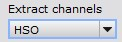
When processing Color/OSC/DSLR files it is possible to extract separate color channels from color data. Channels can be extracted as LRGB, HSO or HOS data. After channels are extracted, processing continues as in mono filter processing.
Channels are extracted right after cosmetic correction and debayering. Channel files are saved to disk so they can be used for processing later.
Using separate channels enables different narrowband mappings when collecting narrowband data with OSC cameras. Also LRGB data can benefit from separate processing.
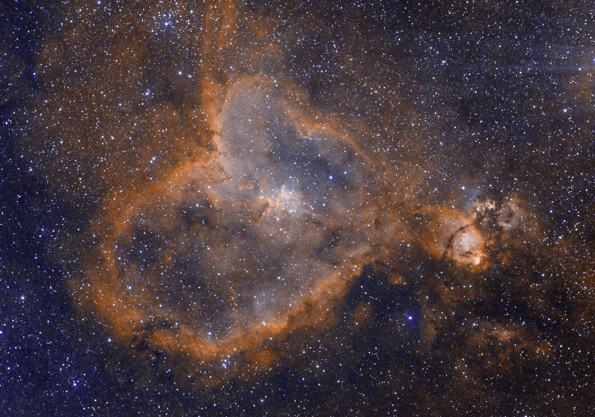
Thanks to René Bondo Hoffmann for providing OSC camera data using Optolong L-eXtreme filter.
Image is processed to emulate the Hubble (SHO) color palette using the L-eXtreme SHO palette option.
Additional color processing was done after the AutoIntegrate script run.

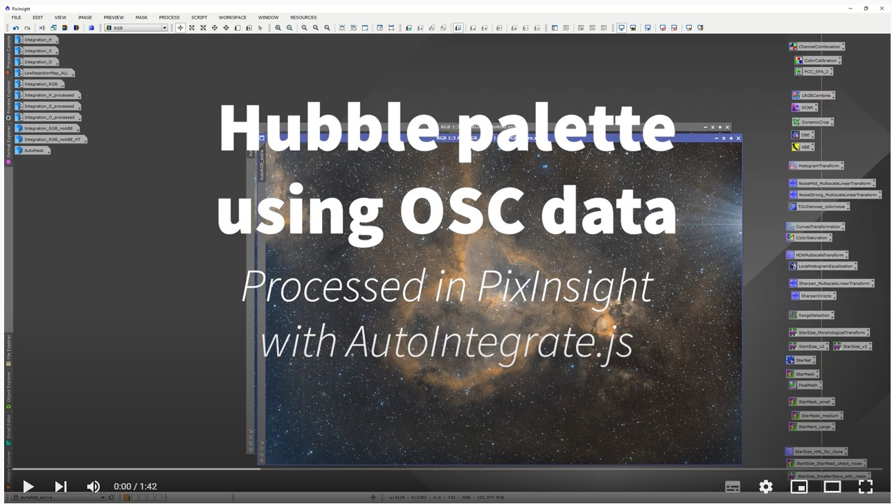
YouTube video
Banding reduction
Banding reduction for each light image

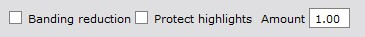
Optionally it is possible to run Canon Banding Reduction script code inside AutoIntegrate. In section Preprocessing / Banding and binning there are options to enable Banding reduction, select Protect highlights and Amount.
Banding reduction can be useful for Canon DSLR data and sometimes also for other OSC data too. Banding reduction is run just after debayering so it is run separately for each light image.
Banding reduction enhancements option

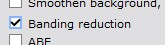
There is also an enhancements option to run banding reduction on the final image.
Mono cameras: LRGB
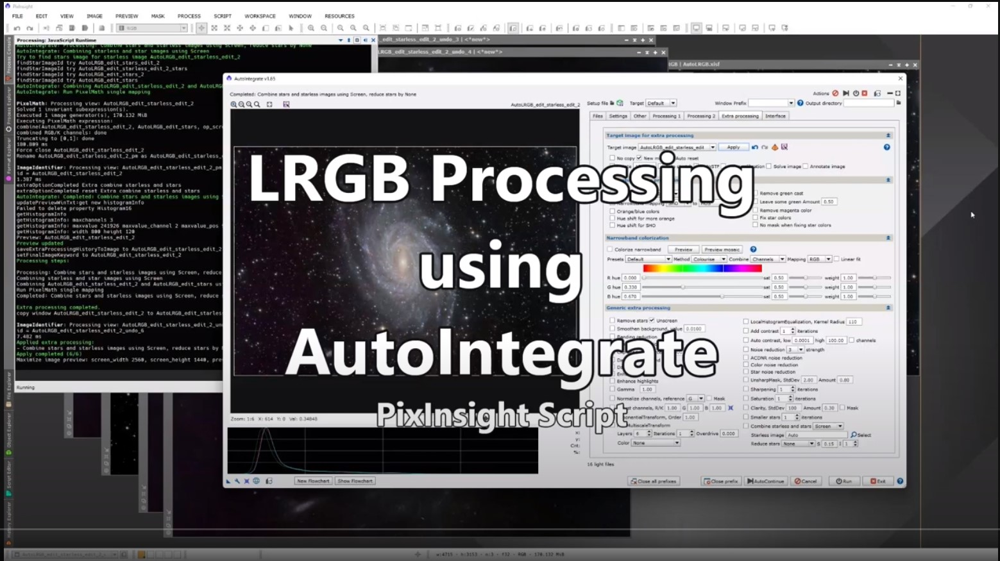
▶ LRGB processing using AutoIntegrateEach filter is integrated separately, R, G and B are combined to a color image and the L image is added with LRGB combination. The final image is AutoLRGB, or AutoRGB if there is no L data.
Processing RGB files
Script automatically detects RGB files. If only LRGB, RGB or OSC/DSLR/color files are present it runs a basic RGB workflow.
Narrowband
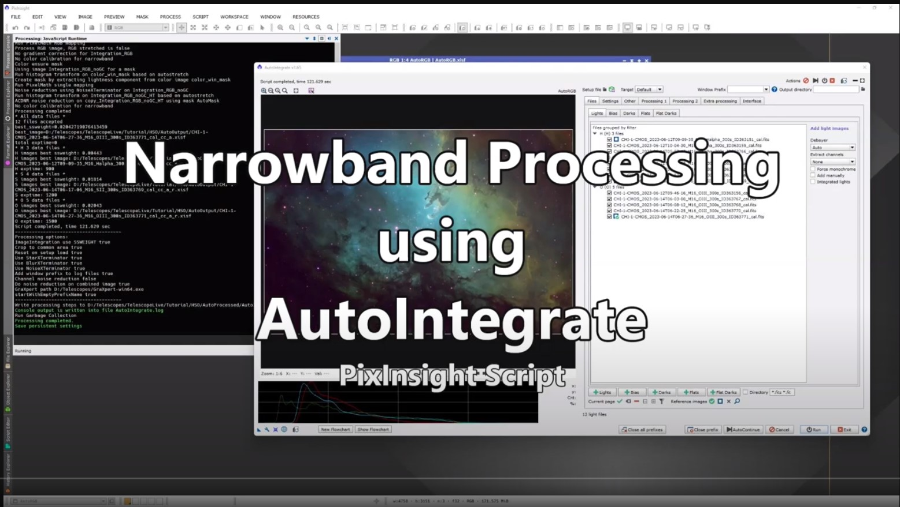
▶ Narrowband processing using AutoIntegrateIf any Ha, SII or OIII files are present, a narrowband palette maps them to RGB. The default palette Auto picks a palette based on your filters, and uses RGB stars when RGB data is also available.
Processing narrowband files

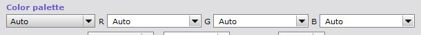
Narrowband images are supported by the script. They are processed mostly the same way as other images. Main difference is that you can choose the color palette that is used when mapping narrowband images to RGB channels.
Note that AutoIntegrate always uses narrowband mapping if any of the H, S, or O filters are present. So for example The HaLRGB workflow always uses narrowband mapping.
Below is a sample output from AutoIntegrate script when using narrowband data and SHO color palette. Otherwise it was run with default settings but Remove green cast and Fix star colors options were checked.
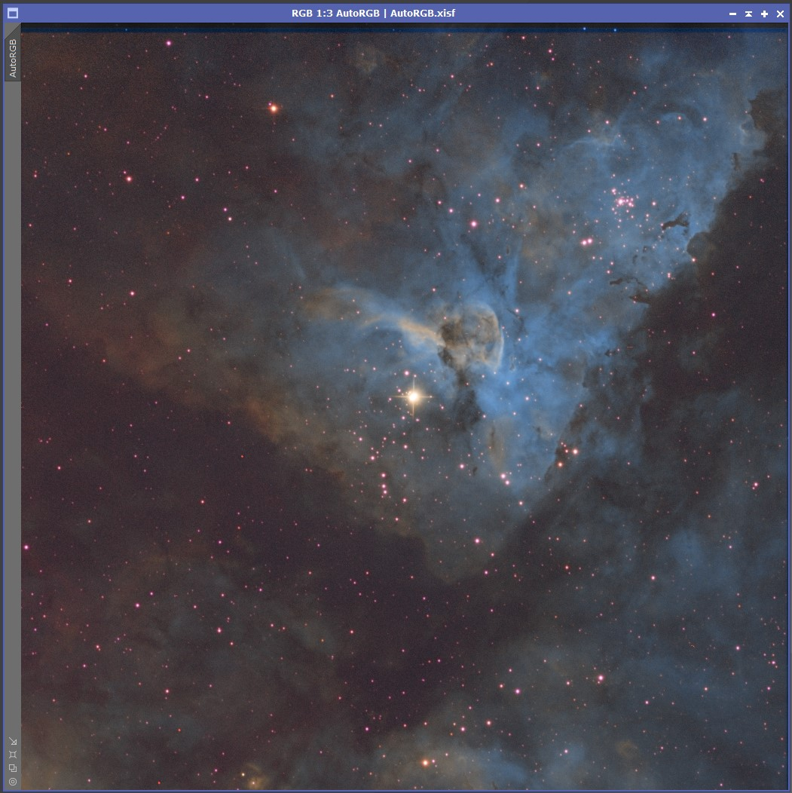
Thanks to Erik Westermann for providing narrowband data.

Narrowband palettes
By default a single narrowband palette is run. It can be selected in the Settings / Narrowband processing section. If there are any of the H, S or O files available then a narrowband palette is always used. Note that even if there is just H files with LRGB files then a narrowband palette is used.
Available narrowband palettes are listed below. Actual narrowband mapping is done based on the values in R, G and B edit fields. The palettes listed here are just shortcuts to the actual narrowband mapping values. You can also define your own narrowband mapping values in the User defined option or just edit the R, G and B mapping values before processing. The text in the R, G and B edit fields must be PixelMath compatible expressions.
- Auto - Automatically selects the best narrowband palette based on the available data.
- SHO
- HOS
- HSO
- OHS
- HOO
- Pseudo RGB
- Natural HOO
- 3-channel HOO
- Dynamic SHO
- Dynamic HOO
- max(R,H),G,B - Combine Ha and RGB data
- max(RGB,HOO) - Combine Ha and OIII and RGB data
- HOO Helix
- HSO Mix 1
- HSO Mix 2
- HSO Mix 3
- HSO Mix 4
- L-eXtreme SHO
- RGB - Normal RGB palette
- User defined - Your own mapping written as PixelMath expressions in the R, G and B fields
- All - Process all narrowband palettes
To try out different narrowband palettes there is a standalone script Narrowband Combinations in the Script / AutoIntegrate menu.
Automatic selection of narrowband palette
The default narrowband palette is Auto. With the Auto option the script automatically selects a narrowband palette based on the available data.
Below are listed mappings available when using the Auto option.
| Input Combination | Mapping/Output |
|---|---|
| SHO | SHO |
| SHO + LRGB | SHO, RGB stars |
| SHO + RGB | SHO, RGB stars |
| HO | HOO |
| HO + LRGB | HOO, RGB stars |
| HO + RGB | HOO, RGB stars |
| H + LRGB | max(R,H),G,B |
| H + RGB | max(R,H),G,B |
Automatic processing of RGB stars

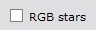
When narrowband palette is used it is possible to automatically process RGB stars if RGB data is available. RGB data is processed separately from the narrowband data to create stars image. Stars are removed from the narrowband image and then combined with the RGB stars image to create a final image.
Auto narrowband palettes automatically use the RGB stars option if both narrowband and RGB data is available.
Automatic processing of all palettes
Optionally it is possible to process multiple narrowband palettes in one run.

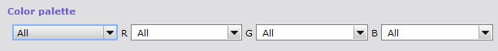
Narrowband palette option All automatically processes all HSO palettes it knows. Every image is named with the palette option and automatically saved to disk as a .xisf file. Images are also left open on screen. With Save final image files selection it is possible to save them all for example as 16 bit TIFF files. You can also use enhancements options in images, then images with name Auto_+palette-name+_enh are created. If you want to just check the output of different palettes then you can use the Fast mode option on the Settings / Other section.

All narrowband palettes known by AutoIntegrate, and two SHO palettes after enhancements processing.
Automatic processing of multiple palettes

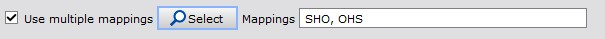
With option Use multiple mappings it is possible to select needed narrowband palette mappings instead of all. Multiple mappings run the same way as all palettes option but only selected mappings are used.
The fastest way to generate all palettes is to first run processing with one palette and then use already integrated images for other palettes. For processing multiple palettes open Integration_channel files on the desktop, select All narrowband palette or multiple palettes and use AutoContinue to run palettes from already integrated channel files. If you want to just check the output of different palettes then you can use the Fast mode option on the Settings / Other section.
Foraxx palette

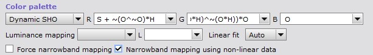
To run Foraxx palette during the normal processing you need to select Dynamic narrowband palette like Dynamic SHO and check the option Narrowband mapping using non-linear data.
Dynamic narrowband palettes should be run using non-linear data. With dynamic palettes the data is always stretched before running the dynamic combinations.
Foraxx enhancements option

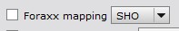
In the Enhancements / Narrowband enhancements section there is also an option to use the Foraxx palette for SHO and HOO images. Foraxx needs nonlinear images so it can be run after other processing. Foraxx palette is the same as Dynamic palettes in the Settings / Narrowband processing section but for SHO images also Remove green cast and Orange/blue colors options are run for the image.
Narrowband mapping enhancements options

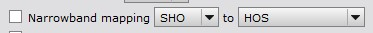
Another way to check different narrowband palettes is with the Narrowband mapping option in the Enhancements / Narrowband enhancements section. If the processed image is a SHO or HOO image then it is possible to try different narrowband mappings. When the Narrowband mapping option is used, channels are extracted from the SHO or HOO image and mapped again to create a new palette image.
Ha to RGB mapping
Using narrowband color palette

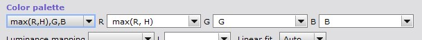
Narrowband Color palette list has a few predefined options to map Ha to RGB. It is also possible to create a custom mapping by writing PixelMath expressions to the channel boxes.
Using Ha to RGB mapping section

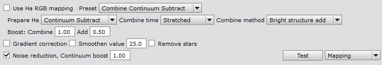
Postprocessing / Ha to RGB mapping section is used to map Ha to the RGB red channel. Different mapping options can be selected and the mapping can be tested with a test button.

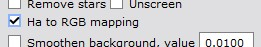
There is also an enhancements option Ha to RGB mapping to add Ha to RGB. In that case None combine mapping option can be used to skip mapping during processing. Then the mapping can be done using the enhancements option. Enhancements option mapping settings are taken from Postprocessing / Ha to RGB mapping section.
With the enhancements option it is possible to use a different stretching for the Ha image. So if the galaxy image is processed with masked stretch then Ha image can be stretched with AutoSTF and combined for example with 'Max 0.7' predefined setting.
Narrowband to RGB mapping

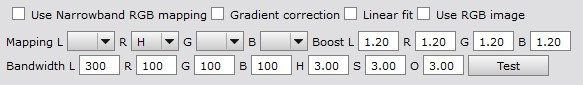
A special processing is used for narrowband to (L)RGB image mapping. It is used to enhance (L)RGB channels with narrowband data. It cannot be used without RGB filters. This mapping is similar to the NBRGBCombination script in PixInsight or as described in Light Vortex Astronomy tutorial Combining LRGB with Narrowband (Light Vortex Astronomy site is no longer available). You can find more details on parameters from those sources.
If narrowband RGB mapping is used then narrowband Color palette is not used.
With narrowband RGB mapping you can choose:
- Mapping of narrowband channels to (L)RGB channels
- Boost for (L)RGB channels
- Bandwidth for each filter
- Test the mapping with a test button
Comets
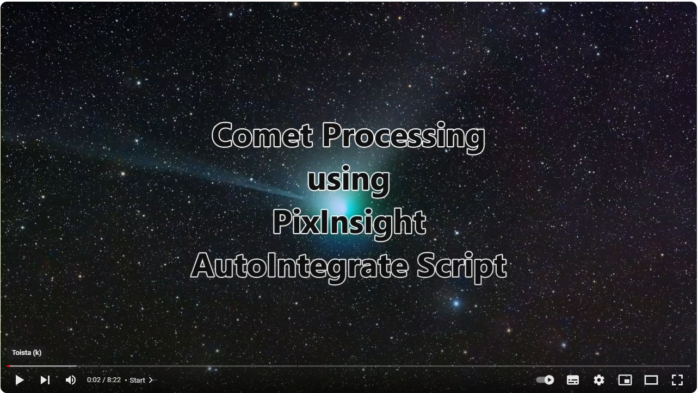
▶ Comet processing using AutoIntegrateThere is also a built-in Comet Processing tutorial in the script.
Comet processing

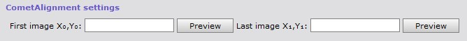
Below is the suggested workflow with comet processing in AutoIntegrate:
- Run a normal workflow to get correct stars and background objects.
- Load star aligned *_r.xisf files as light files. Those can be found from the AutoOutput directory.
- Set Window prefix to avoid overwriting files in the first step.
- Check Comet align in Settings / Image processing parameters section.
- Check star removal option (StarXTerminator or StarNet2) in Settings / Tools section.
- Check Remove stars from lights in Postprocessing / Star stretching and removing section.
- Check No CosmeticCorrection in Other / Other parameters section.
- Go to the Preprocessing / Star and comet alignment section.
- Fill in first and last comet position coordinates. To get the coordinates click the Preview button for the first or last image, go to preview, zoom to 1:1 view and click the comet nucleus with the left mouse button. Note that the first and last images are selected automatically based on image timestamps from the DATE-OBS keyword when images are loaded.
- Copy coordinates from the preview coordinates box and paste them to the comet coordinates box. There are arrow buttons in the preview to automatically copy coordinates.
- Use the Run button to process images.
Comet alignment will automatically skip star alignment and SCNR. Since already star aligned images (*_r.xisf) are used then Star alignment could invalidate coordinates given here and thus it is not used.
Note that using starless images may cause problems for example with ImageIntegration or BlurXTerminator. In some cases this shows as an error "Zero or insignificant PSF Signal Weight estimate" in the AutoIntegrate log files. With missing PSF error in ImageIntegration you can use an option ImageIntegration use ssweight. Sometimes on starless images PSF value can not be calculated. Then a manual value should be given or BlurXTerminator should not be used.
It is possible to manually run the CometAlignment process. Below are the steps to use AutoIntegrate with manual comet alignment:
- Run a normal workflow to get correct stars and background objects.
- Manually run the CometAlignment on star aligned *_r.xisf files. This will create *_ca.xisf files.
- Remove stars from *_ca.xisf files. StarXTerminator has a batch mode that makes this easier.
- Load comet aligned files into AutoIntegrate as lights files.
- Check Start from ImageIntegration in Other parameters.
- Use the Run button to process images.
Mosaics
Creating mosaics
Using Photometric Mosaic script
PixInsight has great tools for creating mosaics. One such tool is the PhotometricMosaic script by John Murphy. You prepare linear images with scripts ImageSolver, MosaicByCoordinates and TrimMosaicTile and then create the mosaic using script PhotometricMosaic.
Using these tools with AutoIntegrate you first need to run a basic workflow which creates integrated linear images Integration_[LRGBHSO] for separate color channels data or Integration_RGB for OSC data. You can then create a mosaic for each channel or for OSC data.
Once you have the mosaic tiles you can load them into PixInsight with names Integration_[LRGBHSO] or Integration_RGB_color. You can then create the final image using the AutoContinue button.
Batch mode for mosaic images

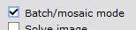
Batch mode is intended to be used with mosaic images. In mosaics there are several sets of images and typically the same basic processing options are used for all images. In Batch mode AutoIntegrate script automatically asks for files for each mosaic panel. You can freely choose the directories for images. Script creates a final processed image which has the same name as the directory where images were read. So if images are from directory P1 then the image name will be P1. At the end of the script only final batch mode images are left open and all intermediate images are closed. Batch mode is enabled with the Batch/mosaic mode option in the Settings / Other section.
When batch completed is it possible to save all files in a different formats by clicking a button in the section Settings / Save final image files. Batch mode adds a keyword to each image and it is used to find files for saving. It is possible to save images in PixInsight .xisf format, 16-bit TIFF format or 8-bit TIFF format. If you want to assemble the final image in Photoshop, save images in 16-bit TIFF format.
Batch mode keyword is saved on disk with .xisf format but not with TIFF format. If you want to process images later and use batch save then you should save files also in .xisf format.
Note that batch mode does not create the actual mosaic image. It only creates panel images for further mosaic processing.
Other data
Processing Hubble data
A YouTube video shows how to process Hubble data using AutoIntegrate script. It includes basic steps to download Hubble data and shows how to do basic processing using AutoIntegrate script.